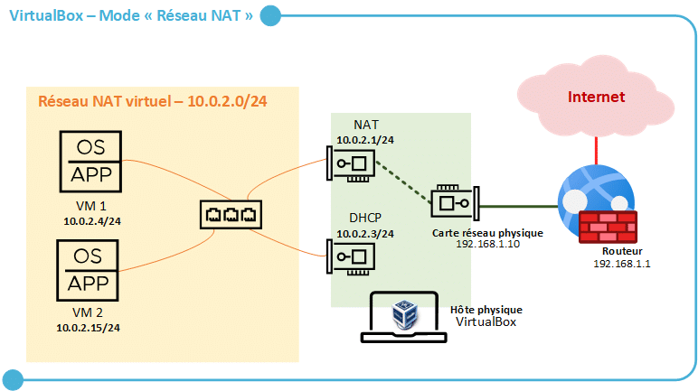
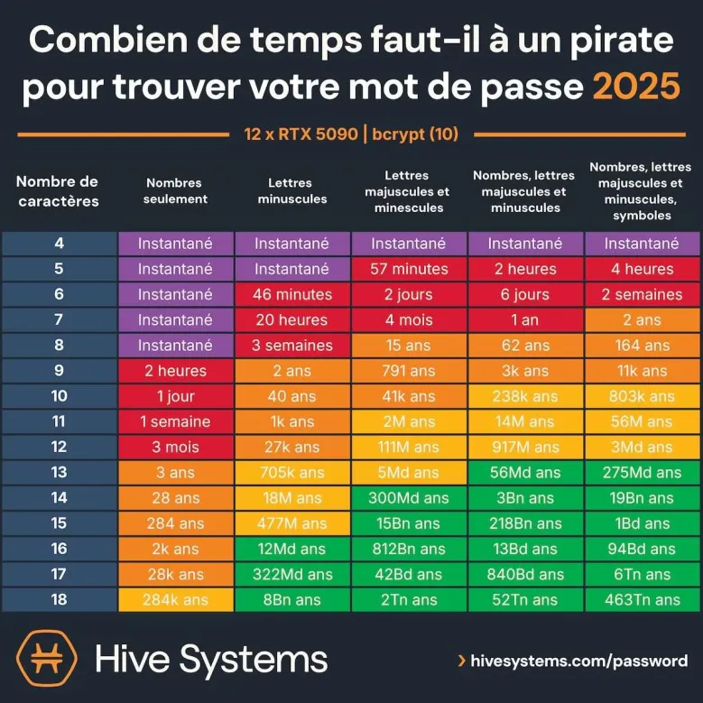

Cours Réseau – 03 Octobre 2025
Hébergement web, VPS et Serveur dédié
Hébergement mutualisé : place préconfigurée sur un serveur, peu cher. L'hébergeur gère tout sauf votre site. Limité en langages disponibles.
VPS (Virtual Private Server) : serveur virtuel complet. Vous configurez le serveur, choisissez les caractéristiques (CPU, RAM, HDD). Plus de liberté qu’un mutualisé. Plus de liberté qu’un mutualisé.
Serveur dédié physique : configuration complète, pour des besoins très personnalisés et ressources exclusives.
Hyperviseurs
VirtualBox : hyperviseur de type 2, utilisé pour tests et formation. Nécessite un OS hôte.
Hyperviseurs de type 1 : utilisés en production et datacenter, OS à part entière, gestion directe des VM.
Schéma VirtualBox NAT :
Réseaux & ports
Ports et protocoles principaux :
| Protocole | Port |
|---|---|
| HTTP | 80 |
| HTTPS | 443 |
| FTP | 21 |
| SSH | 22 |
Redirection de ports : configuration sur routeur pour autoriser certains flux réseau.
Réseau NAT : VM → Hôte → Internet.
Connexion sécurisée via SSH.
CMD & Linux
- Commande
clear: nettoie l’écran apt update: récupère la liste des paquets disponibles sur Debian, ne met rien à jour- Sous Linux, le système ne gère pas les extensions des fichiers (uniquement pour l’utilisateur humain)
- Types de fichiers Linux : répertoire, périphérique, normal (texte, vidéo…)
Le contenu des fichiers est géré par d’autres applications (ex : éditeurs, lecteurs).
Sécurité mots de passe
Recommandations pour créer des mots de passe robustes :
- Minimum 12 caractères, mélange de majuscules, minuscules, chiffres et symboles
- Exemples : utiliser un texte de base et le transformer (numéro de ligne, substitution)
- Outils recommandés : KeePass, ANSSI guidelines
Exemple de robustesse selon nombre et type de caractères :
SSH et clés
SSH (Secure Shell) permet une connexion sécurisée entre machines :
- Échange de clé privée / clé publique
- Authentification sans mot de passe possible via clés
- Commande utile :
ssh-keygenpour générer des clés
Liens utiles :